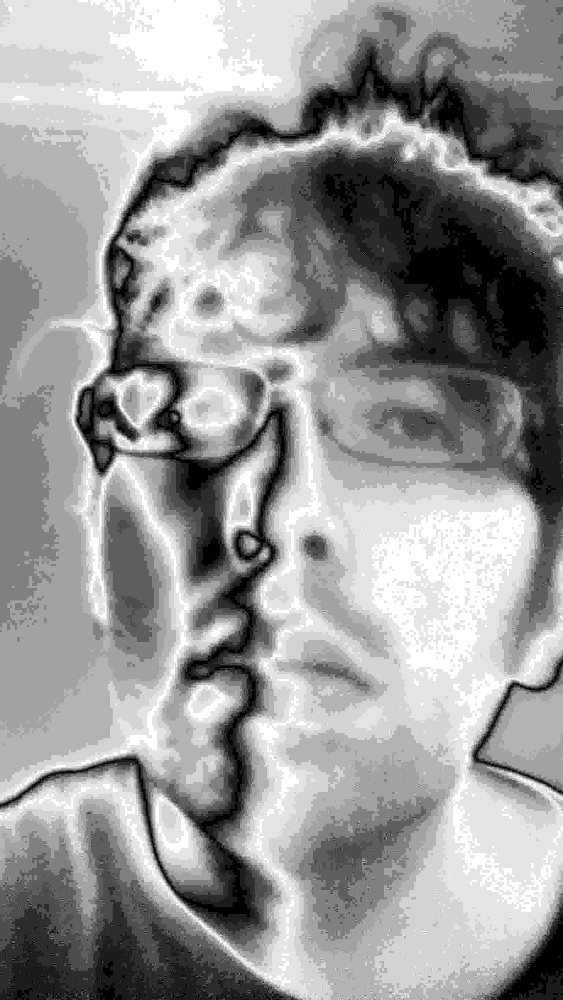

2013
2012
2011
2010
Epstein Lab Spring 2012
Epstein Lab Fall 2011
in Advanced 3D Algorithms, CUNY Grad Center, Fall 2011
is speech dead?
the digital humanities - more buzzwords, or a worthwhile pursuit?
thoughts on transfer learning
NLP links
ML links
tech links
